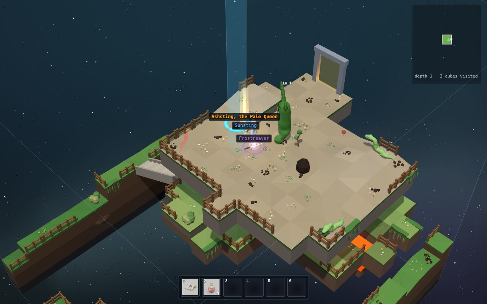
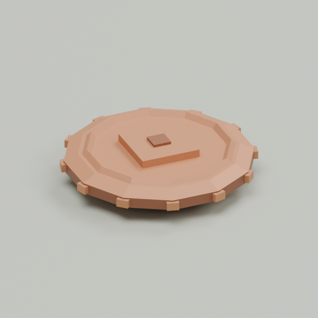
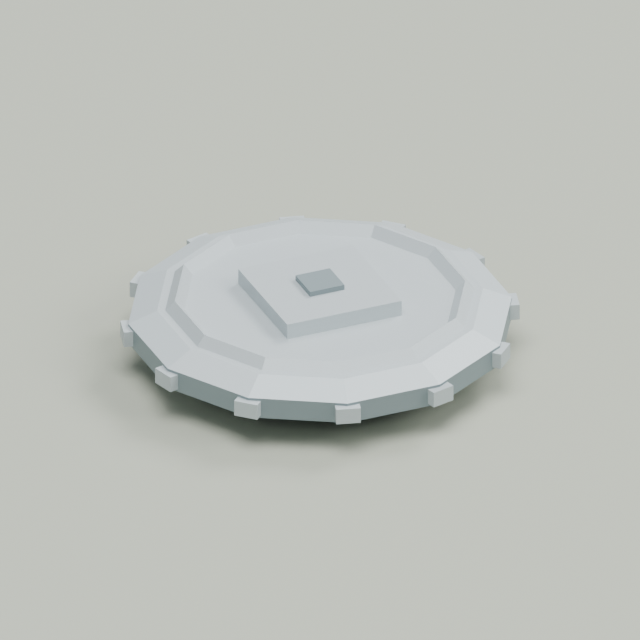
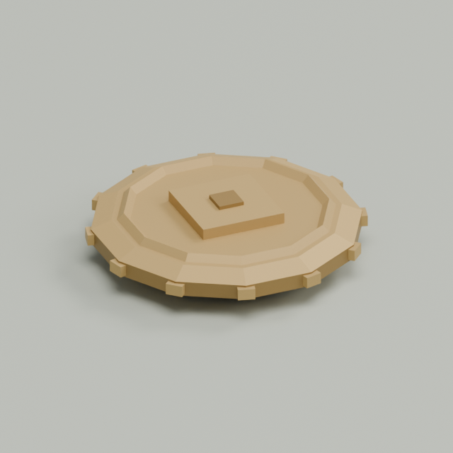

A machine that makes swords
Nobody designed the swords you find in Cube Crawler one by one. There is a sword machine instead.
Every time a monster drops a sword, or you open a chest, the machine rolls dice and builds a brand-new sword, with its own rarity, powers and name. Like "Ashsting, the Pale Queen", a legendary greatsword.
Its glow on the floor tells you how rare it is: no glow for common, a ring for uncommon, a pool of light for rare, beams of light for epic and up.
Press X in the game to see the names of everything on the floor.

Try it: roll a sword
This runs the game's real sword machine. Each roll goes through four steps: rarity, then the kind of sword, then its magic powers (affixes), then a name. Move the item level up: swords from deeper down are stronger and rarer.
The rarity ladder
| RARITY | WEIGHT | FROM LEVEL | AFFIXES | DAMAGE |
|---|---|---|---|---|
| Junk | 24 | 1 | 0 | ×0.80 |
| Common | 40 | 1 | 0 | ×1.00 |
| Uncommon | 22 | 1 | 1 | ×1.05 |
| Rare | 8 | 1 | 2 | ×1.10 |
| Epic | 2.5 | 4 | 3 | ×1.16 |
| Legendary | 0.5 | 8 | 4 | ×1.24 |
| Mythic | 0.08 | 13 | 4+ | ×1.32 |
| Ancient | 0.015 | 17 | 5+ | ×1.40 |
It's the bag of marbles again! 40 white marbles for Common, but only half a marble for Legendary.
Item level is the level of the monster that dropped it (about its depth). Better rarities only appear from a certain level: no Epic before level 4.
And the deeper you go, the more the bag tips towards the rare end, slowly. At item level 20, about 8% of swords are Epic and 3% Legendary.
Luck tips it further: guardians and chests roll with luck. Ancient swords only come from guardians.
Try it: how the odds change
These are the exact chances the game uses. Slide the item level up from 1 to 25, then add luck.
The formula: each rarity's weight is multiplied by exp((0.025 × (level − 1) + luck) × rank). "Rank" is 0 for Junk up to 7 for Ancient, so the rarest ones grow fastest.
Magic powers: affixes
An affix is a bonus that changes one number of the sword. Prefixes go in front of a name, suffixes after it ("Sharp sword of Reach"):
| AFFIX | DOES |
|---|---|
| Sharp | + damage |
| Brutal | + % damage |
| Swift | faster swings |
| Sweeping | a wider swing |
| Vicious | more critical hits |
| of Reach | a longer reach |
| of the Leech | heals you on every hit |
| of Force | pushes monsters further |
| of Precision | stronger critical hits |
Tiers
Each affix has 7 tiers, like sizes. The item level picks the tier: level 1 to 3 is tier 1, level 19 and up is tier 5. Mythic and Ancient swords reach even higher, up to tier 7.
Sharp at tier 1 adds 2 to 4 damage. At tier 7, 29 to 38.
Names
The name is made from word lists too. Junk gets a shabby word: "Rusty Long Sword". Uncommon gets two words: "Bright Fang". Legendary gets a made-up word and a title: "Grimfang, the Last Oath".
Who drops what
Monsters
Every monster drops coins. Sometimes a sword (5%) or a health potion (3%). Tougher monsters drop more often: a Stunder 8%.
And remember: the same monster always drops the same thing, even if it comes back after you die. Why?
Guardians
A side guardian always drops a sword (at least Uncommon) and a potion. A descent guardian drops two of each, at least Rare from level 5. Only guardians can drop Ancient swords.
Treasure chests
Every depth has four treasure sites: two basic, one uncommon, one rare. Their chests hold coins, potions and a sword or two; the grander the site, the better. Click one to open it!
Coins: 10 copper make 1 silver, 100 silver make 1 gold.



The real code: the sword machine
// The weapon generator. A roll goes through fixed steps, each driven by a table:
// rarity -> base type -> affixes -> name
// It is pure and seeded: the same rng gives the same item. The result is plain JSON:
// { itemId, count: 1, gen: { v, rarity, ilvl, affixes: [{ id, tier, value }], name } }
export function rollWeapon(rng, ilvl, opts = {}) {
ilvl = level(ilvl);
const rarity = opts.rarity ? RARITY[opts.rarity] : rollRarity(rng, ilvl, opts);
const itemId = opts.itemId ?? rollBase(rng, ilvl).itemId, def = ITEMS[itemId];
const affixes = rollAffixes(rng, rarity.affixes, ilvl, baseTags(itemId), rarity.tierBonus);
return { itemId, count: 1, gen: { v: GEN_VERSION, rarity: rarity.id, ilvl, affixes,
name: itemName(rarity.id, def.name, rng) } };
}Four lines, four steps. Each step is a function in its own file: rarities.js, bases.js, affixes.js, names.js.
Pure means: it only uses what you give it. Same dice (rng), same sword. That makes it easy to test, and to show in this guide!
The sword is saved as what it rolled, not how strong it is. Its damage is worked out when needed (itemStats in stats.js). So if the makers re-balance swords later, the ones you already have change with them.
The real code: how strong is it?
export const ILVL_DAMAGE = 0.05;
export const ilvlDamage = ilvl => 1 + ILVL_DAMAGE * (Math.max(1, ilvl || 1) - 1);
export function itemStats(item) {
const w = ITEMS[item?.itemId]?.weapon;
const sum = { damage: 0, damagePct: 0, speed: 0, arc: 0, crit: 0, /* ... */ };
for (const a of item.gen?.affixes ?? []) { /* add up each affix's value */ }
return {
damage: Math.max(1, Math.round((w.damage * ilvlDamage(item.gen?.ilvl)
* rarityOf(item).damage + sum.damage) * (1 + sum.damagePct / 100))),
interval: Math.round(w.interval * (1 - sum.speed / 100) * 1000) / 1000,
crit: CRIT_CHANCE + sum.crit / 100,
/* ... reach, arc, critical damage, leech, knockback ... */
};
}The damage, step by step, for a Rare Long Sword, item level 11, with "Sharp +5":
- base: 39
- item level: × (1 + 0.05 × 10) = × 1.5 → 58.5
- rarity Rare: × 1.1 → 64.35
- Sharp: + 5 → 69.35
- no Brutal: × 1 → rounded: 69
Then in a fight, your own level adds 2% per level.
Prompt quests: Treasure & Weapons
Add a new suffix affix "of the Wind" that makes me walk faster while the sword is equipped. Follow how the other affixes work in src/core/gear/affixes.js and stats.js, and run the tests.This one is tricky: the affix needs a new stat, and movement must read it. A good agent will find that out. Ask it to explain!
Add some funny words to the sword name lists in src/core/gear/names.js, like "Wobbly" for junk swords and "Pancake" as a noun. Then roll a few swords in the kids-docs loot demo.The guide runs the real code, so you can see your change right away!
Run node tools/loot-table.mjs and explain the output to me. At which depth am I likely to find my first Legendary sword?Tools print numbers. Agents are good at explaining them.